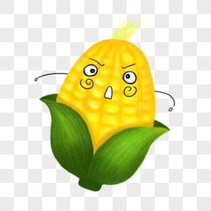
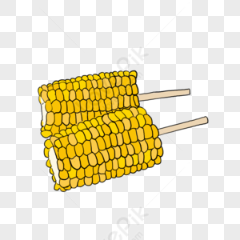
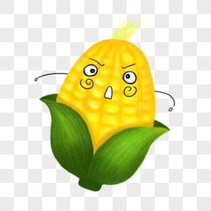
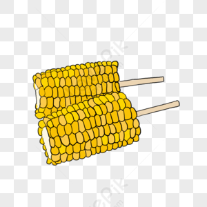

定義
玉米，在《中國生物物種名錄》中稱玉蜀黍，是禾本科玉米屬的一年生草本植物，為全世界總產量最高的重要糧食作物。
用處
玉米除了可直接做為飼料以外，還能藉由加工成許多其他的用途，利用率接近100%。玉米業者運用濕磨法生產的澱粉可再用於造紙、紡織、洗衣和食品等工業上。而澱粉也可製成糖漿和糖，做為糖果和食品之用。近年來澱粉加工為甜料，如玉米糖漿，葡萄糖以及高果糖玉米糖漿做為軟性飲料，糖果及蛋糕等製品糖份添加劑的數量已大幅提升。玉米的乾磨業則是生產玉米花、玉米粉等。此外，玉米轉化成酒精可做為汽車的燃料，為地球提供較乾淨的能源。
營養成分
玉米含有醣類、蛋白質和脂肪等三大營養素，由於主要的熱量來源為澱粉，因此在食物分類上，被歸類於「全榖雜糧類」。
玉米亦含有豐富的膳食纖維、維生素B1、B2、B6、菸鹼素等，維生素B群及鉀、鎂等礦物質。
此外，不同品種的玉米所含營養成分亦不同。如黃玉米相較於白玉米含有較高之 β-胡蘿蔔素、葉黃素及玉米黃素，營養價值更為豐富。
食用玉米對人體好處
1. 維持消化道健康
玉米富含膳食纖維，可促進腸道蠕動，幫助排便及維持消化道機能。
2. 促進新城代謝
玉米富含維生素B群，可幫助維持體內正常能量代謝。
3. 調解生理機能
玉米富含鉀、鎂等礦物質，有助於調節體液及電解質平衡，並幫助維持肌肉及神經的正常功能。
4. 維持晶亮健康
黃玉米含有 β-胡蘿蔔素、葉黃素及玉米黃素等營養素，幫助維持在暗處的視覺。
食用時的注意事項
玉米的營養價值十分豐富，但由於主要熱量來源為澱粉，攝取過量時仍會造成體重及血糖上升。
因此減重者及糖尿病患者仍應控制玉米攝取量，選擇清蒸、水煮等方式烹調，並取代正餐部分主食，避免攝取過量。
另外，玉米的鉀、磷含量較高，腎臟病患者不宜大量食用，且烹調方式以水煮為佳，避免引發高血鉀、高血磷等問題。